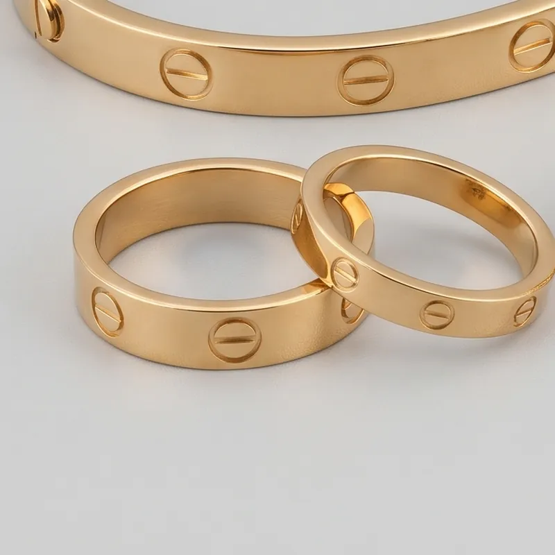

Bagues & bracelets
Guide des tailles
Trouvez la taille parfaite en quelques secondes, avec un simple fil ou une bague que vous possédez déjà.
Bagues
Enroulez un fil autour de la base de votre doigt, marquez le point de jonction puis mesurez la longueur en millimètres : c'est votre tour de doigt.
taille française recommandée
| Taille FR | Tour de doigt | Diamètre |
|---|---|---|
| 50 | 50 mm | 15,9 mm |
| 52 | 52 mm | 16,5 mm |
| 54 | 54 mm | 17,2 mm |
| 56 | 56 mm | 17,8 mm |
| 58 | 58 mm | 18,5 mm |
| Réglable | 50 à 58 mm | — |
Bracelets et joncs
Mesurez votre tour de poignet juste sous l'os, puis ajoutez 1 à 2 cm selon l'aisance souhaitée.
| Tour de poignet | Taille conseillée | Porté |
|---|---|---|
| 14 à 15 cm | 16 cm | Ajusté |
| 15 à 16 cm | 17 cm | Classique |
| 16 à 17 cm | 18 cm | Classique |
Entre deux tailles ? Choisissez la plus grande. L'échange de taille est gratuit sous 7 jours.